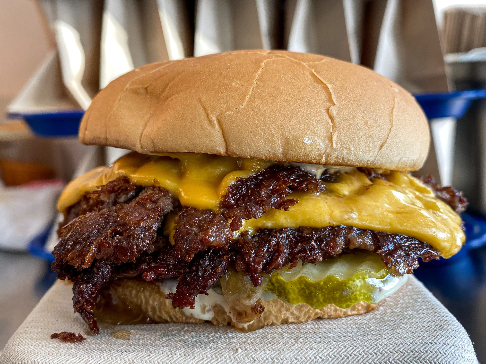

Smash Burgers

Description
Smash burgers are one of my favorite foods! So long as you have an iron skillet or
a flat top grill. You can make some of the juciest, most delicious hamburgers ever.
Best part about smash burgers is you can make them anyway you want.
Ingredients
- Hamburger - 80/20 is perfect. Don't go too lean or they wont be juicy.
- Buns - Any type of buns is fine. You can even pair these hamburgers with hawaian buns for a unique taste.
- Your favorite toppings - Emphasis on your favorite toppings you can add cheese, lettuce, tomato, onion the sky is the limit.
Steps
- Preheat an iron skillet or flat top to medium high.
- Make your hamburger into equal sized balls 1/4lb is perfect.
- Once pan is heated place your ball's of hamburger on pan and smash them flat with a burger press.
- Place buns face down on griddle to toast them.
- After a minute flip hamburger.
- If you like cheese add it now.
- Put buns on a plate then add your hamburgers to them.
- Add your favorite toppings and let them sit for 3 minutes.
- Eat and Enjoy!
Homepage